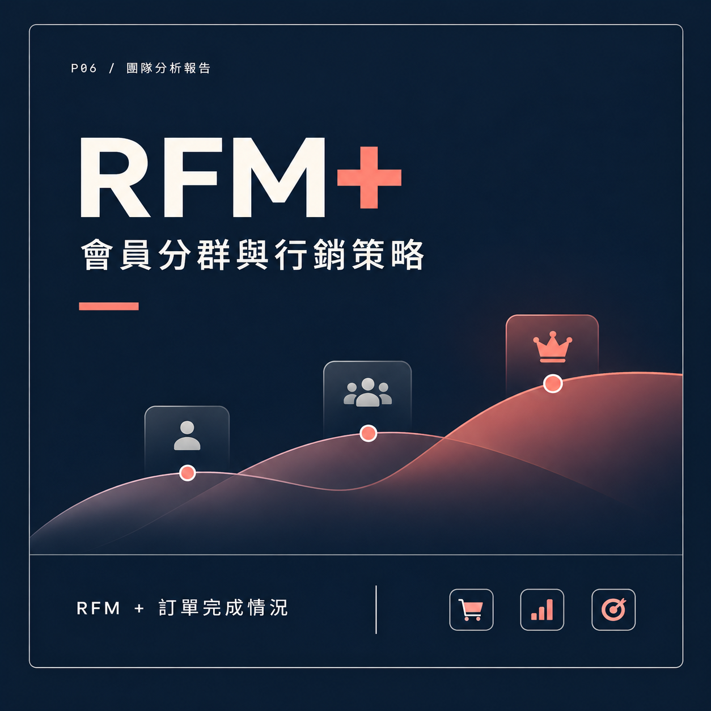

P06 / 顧客分析與行銷策略
會員分群與行銷策略
以傳統 RFM 模型為基礎，研究如何將訂單完成情況納入顧客價值評估，改善僅依消費頻率與金額判斷會員價值的不足。我擔任團隊組長，負責任務分配、參與資料分析，並整合研究內容與行銷策略建議。

會員分群與行銷策略｜改良 RFM 研究
01
問題與研究方法
傳統 RFM 模型透過最近消費時間（Recency）、消費頻率（Frequency）與消費金額（Monetary）評估顧客價值。然而，若只考慮這三項指標，可能忽略取消訂單、退貨或交易未完成等行為，導致部分會員的實際消費貢獻與模型評分存在落差。
因此，我們研究將訂單完成情況納入 RFM 評估框架，結合會員交易紀錄與成功訂單相關指標，重新檢視會員價值的分層方式，並比較改良模型與既有會員等級之間的關係。
研究進一步從分群結果出發，探討如何區分高價值會員、具成長潛力的會員與高風險會員，並針對不同客群提出更符合其消費行為的行銷與會員經營策略。
02
我的貢獻
我擔任團隊組長，負責規劃研究工作的分工與進度，協調成員完成研究背景、模型分析及策略建議等不同部分，並確保整體研究方向與報告內容保持一致。
在研究過程中，我參與會員價值與分群結果的分析討論，協助整理研究觀察，並將模型評估與顧客行為之間的關係轉化為較容易理解的商業問題與策略方向。
我也負責研究內容整合與書面報告整理，串聯研究動機、方法、分析結果及行銷建議，使團隊成果能以清楚且具邏輯性的方式呈現。
03
研究成果
團隊完成以RFM 與訂單完成指標為核心的會員價值評估研究，分析交易成功情況如何影響會員分層，並討論改良評估方式在顧客辨識與行銷資源配置上的應用。
根據研究框架，我們針對不同會員類型提出差異化行銷策略：對高價值會員著重關係維繫與忠誠度經營；對潛力會員思考回購誘因與互動機制；對高風險會員則關注交易未完成的原因與服務體驗改善。
透過這項研究，我累積了顧客行為分析、商業問題拆解、研究報告整合與團隊協調的經驗，也更理解如何將資料分析結果轉化為具有商業意義的策略建議。